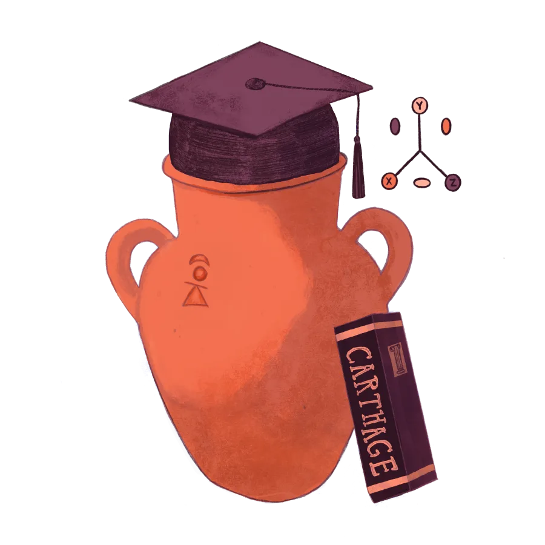
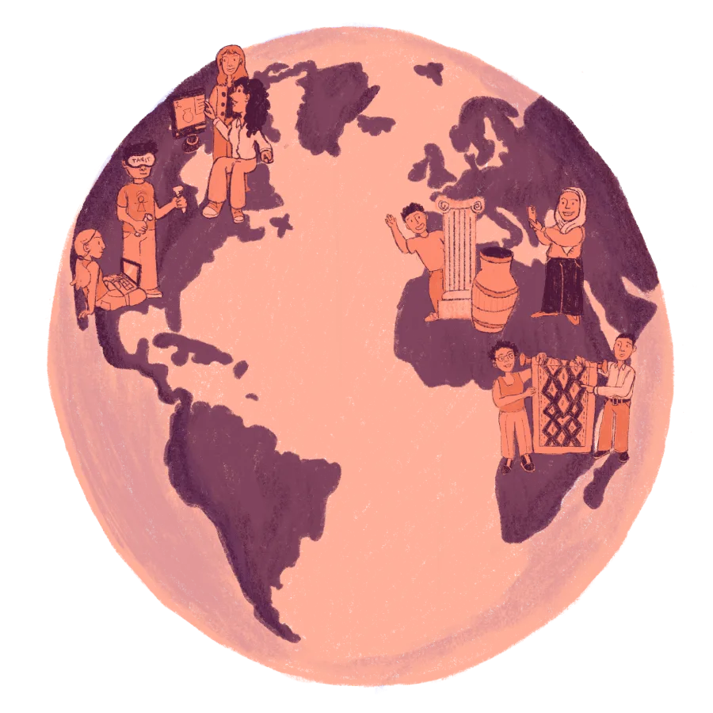
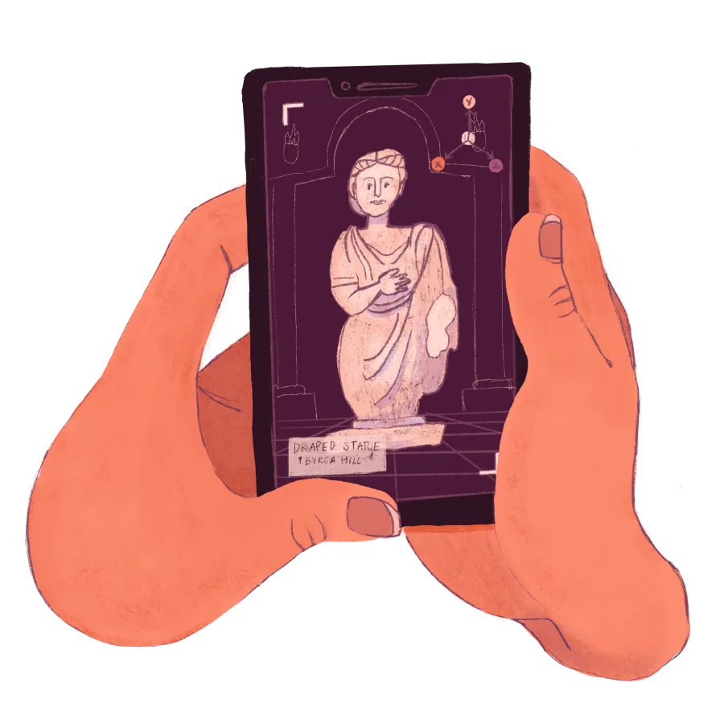
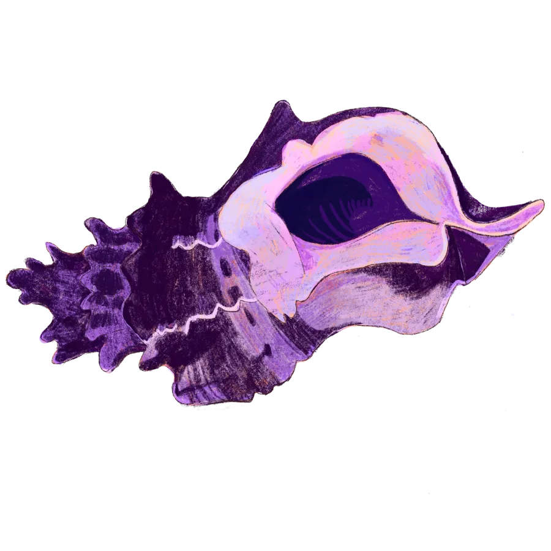

Tanit XR is volunteers in Tunisia, the United States, Europe and Nigeria who meet every week. We scan on the ground and optimize remotely, learn the history behind every object, run workshops, mentor students, attend events together, and share Tunisian culture with people who had never heard of Carthage. Everything we make is free and open.


Volunteers from Tunisia, the US, Europe and Nigeria meet every Thursday at 12 pm Eastern (5 pm Tunisia) to review scans, plan trips and help each other.
Short sessions on the sites and objects we scan, Carthage, the Tophet, the medina of Tunis, so every model comes with its story.
A 6-week course with Mark Jeffcock on capturing 3D models and Gaussian splats with a phone.
Portfolio reviews, mock interviews and career advice for students and early-career volunteers.
We speak, exhibit and sponsor: AWE, the El Jem conference, ImmerseGT at Georgia Tech, and more.
Volunteers who have never been to Tunisia learn its history while modeling lamps, pottery and plants for our virtual museum, and we learn about theirs.
Julia enregistre chaque semaine une courte leçon pour que les bénévoles de tous les fuseaux horaires puissent suivre et choisir une tâche.
Alyssa George, illustrator and designer from the University of South Florida, draws the Tanit XR story: an amphora heading to class, volunteers on every continent, the Draped Statue of Byrsa Hill appearing on a phone, and the murex shell that gave Carthage its purple.




Illustrations by Alyssa George · @alyssumsinbloom See her profile
An evening with the Tanit XR community, planned with TAYP, the Tunisian American Young Professionals. Save the date. Details will follow here and in the newsletter.
Our heritage challenge ran at the official Major League Hacking hack day hosted by Florida Community Innovation at the University of Florida, with two tracks: build an interactive experience from one of our real 3D scans, or make a public history piece with no code needed.
We sponsored a heritage track and a $300 prize at Georgia Tech's XR hackathon, and Dr. Caroline Nickerson led a workshop on citizen science and XR.
Our paper on digital documentation, XR and citizen science for community-led heritage preservation, presented at the El Jem conference and published here in English, French and Tunisian Arabic.
Aucune formation en archéologie ou en 3D requise. Nos premiers scans ont été faits avec un téléphone.
Tell us what you like doing, scanning, 3D, writing, design, research, teaching.
A member of the team welcomes you, and you meet everyone on the next call, Thursdays at 12 pm Eastern.
Optimize a scan, write the history of an object, model something Tunisian, or plan a scanning trip.
Les bénévoles acceptés ont leur propre page ici : vos scans, modèles et articles vous sont attribués.
La Tunisie est le pilote. The Unique Mappers are replicating it in Nigeria. If your community’s heritage is under-documented, we want to hear from you.
Contact us Le pilote au Nigeria